Stage 3: Build Your Own Gen AI Agents with A2A & MCP
Introduction
In this stage, we shift our focus from simple "chatbots" to standardized, discoverable agent services. You will explore how to take a self-contained GenAI system and wrap it in the Agent-to-Agent (A2A) Protocol.
The goal here isn't just to build an AI that you can talk to, but to build an AI that other machines can discover, trust, and interact with. By the end of this module, you will have a deployed, functioning A2A Server that exposes your GenAI reasoning as a reusable capability.
The Agent2Agent (A2A) protocol is an open standard that enables different AI agents to communicate and work together, creating a multi-agent ecosystem.
The technical structure of this protocol involves several key components, including the A2A Client and the A2A Host.
- The A2A Client is the agent that initiates a call, while the A2A Host is the target agent that accepts the prompt, processes it, and returns a response.
- Discovery is handled through an Agent Card, which is a metadata file describing an agent's skills and authentication requirements.
- Communication is managed through "Tasks," which serve as the central unit of work and move through various states such as submitted, working, or completed.
MuleSoft A2A Connector allows you to turn your existing APIs and integrations into tools for AI agents through the A2A Connector and Listener.
The Workshop Project Architecture
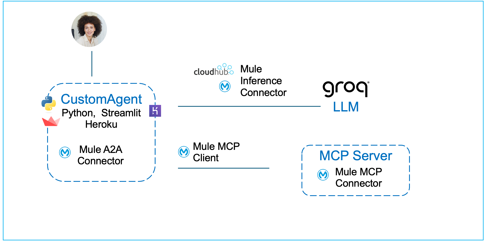
The application you are about to deploy has a specific architecture designed to separate Communication, Reasoning, and Action. If you look at the flow design (see the provided diagram), you will see three distinct responsibilities:
- The Reasoning Layer: Uses the MuleSoft Inference Connector to talk to Groq, an open-source Large Language Model (LLM). This is where the actual "thinking" happens—natural language understanding, context processing, and decision-making.
- The Tooling Layer: The inference layer is equipped with an MCP (Model Context Protocol) Client. By connecting LLM to the MCP Server your agent can reach out and fetch authoritative, real-time data (like inventory status or technical specs) before answering.
- The Protocol Layer: The entire flow is wrapped in the MuleSoft A2A Connector. This layer hides the complexity of the AI. It exposes a standardized contract (the "Agent Card") so that any A2A-compliant client can discover your agent, understand its skills, and send it tasks without needing to know specifically how Groq or MCP works.
This module is intentionally designed to stand on its own. In later stages, it can be orchestrated by brokers, combined with other agents, or integrated into larger systems. But here, the focus is precise: turn a GenAI agent into an A2A-ready building block.
Hands-on Workshop Activity: Deploy & Explore
Instead of assembling the flows component-by-component, we’ve provided packaged JAR files in which the key steps have already been completed. You’ll import it into Anypoint Studio, examine it and deploy it to CloudHub.
Due to environment constraints (version difference) with Anypoint Studio in attendee VMs, you would not be able to test it locally or deploy using Anypoint Studio. However you can deploy the JAR file on CloudHub using Mule Runtime manager and interact with it using an A2A application that we provide.
Although you are using a pre-packaged JAR rather than configuring each connector manually in Anypoint Studio, we still explain every part of it in the sections below, so you understand exactly how it works and how to apply the same approach in your own projects.
This artifact contains the fully assembled flows described above.
Your Mission:
- Import the provided JAR file into Mule Anypoint Studio.
- Explore the logic: We will review the Mule Flow configuration to understand how the A2A Task Listener passes the user's prompt into the Agent Brain sub-flow.
- Deploy the provided JAR file to CloudHub Runtime Manager.
- Interact: Once running, you will query your new Agent using an A2A Client to see how it dynamically decides when to answer directly and when to call your MCP tools.
Designing the A2A + MCP Mule Flow
When you review the flow design, you will see two main sections:
- Top Flow (
answer_question): This is the A2A Interface. It listens for incoming standardized tasks, extracts the user's prompt, and hands it off to the logic layer. Once the logic is done, it packages the result back into a compliant A2A JSON response. - Bottom Sub-Flow (
agent-brain-logic-flow): This is the Logic Core. It sends the prompt to the AI, executes MCP tools if the AI requests them, and summarizes the final answer.
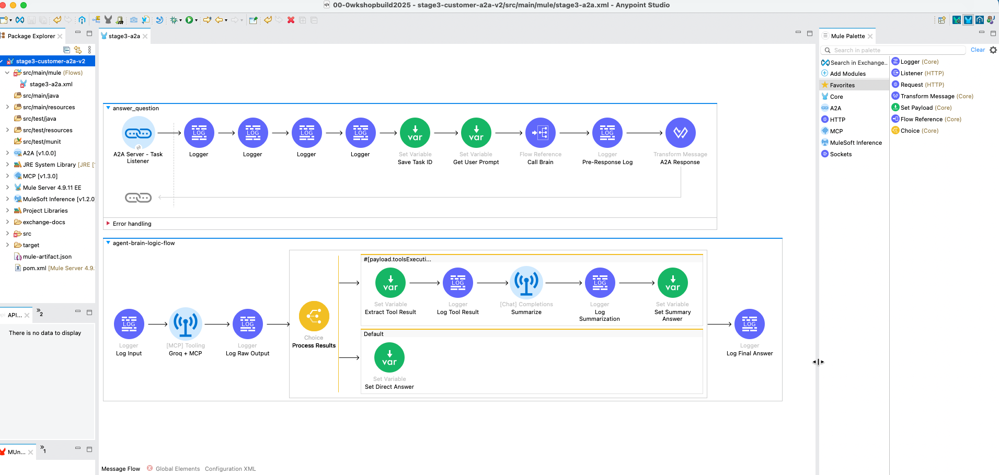
Hands-On: Anatomy of an A2A Agent
Download & import the packaged Mule flow
Open up your VM (instructions provided by your instructor). All the following hands-on steps are to be completed inside the VM.
Download the packaged JAR file (use chrome browser): Download JAR File
Typically it will download the file in the following locations inside the VM: C:\Users\workshop\Downloads
Click on File → Import and find the file the downloaded JAR (stage3-a2a-v2.jar) on your VM.
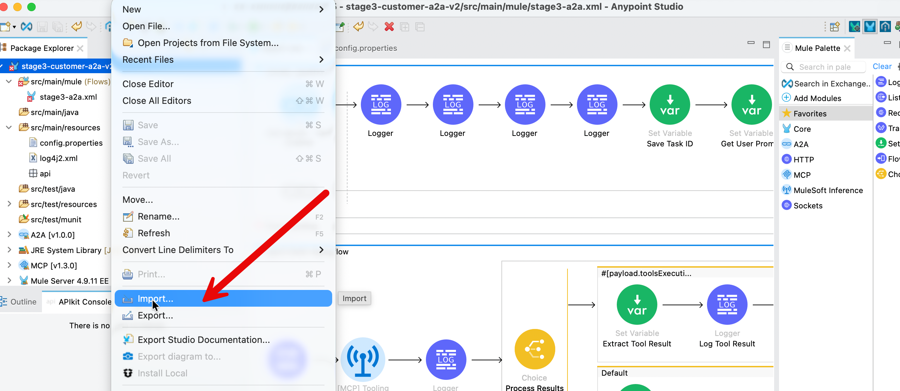
Choose the import wizard → Anypoint Studio → Packaged Application
You can monitor the import progress in the bottom right corner of the Anypoint Studio.
Once import completes, a project gets created in Anypoint Studio with the configurations packaged in the JAR file.
Let’s explore the Mule Flow for A2A server
In the left sidebar of the Anypoint Studio, find the file stage3-a2a.xml (src/main/mule folder) and click on it. It will open up the Message Flow in the center window.
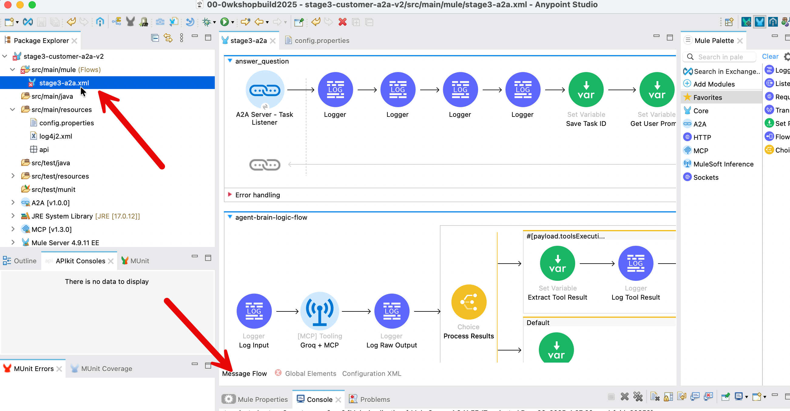
The Mule app flow has two perspectives - as you see in the above screenshot.
- the visual perspective accessed via the Message Flow tab
- the programmatic perspective accessed via the Configuration XML tab
Let’s examine this flow - following is a bigger screenshot of what you should see on your screen.
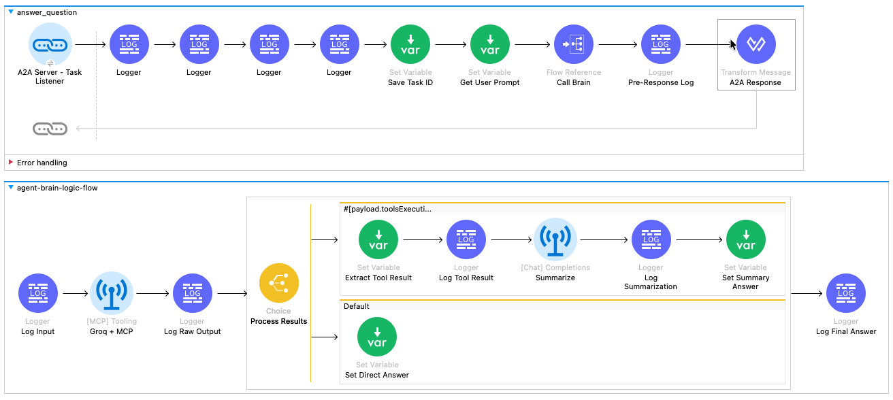
The Wiring: How It All Connects
Before we look at the individual icons, let's understand the data pipeline shown in the diagram.
- The Top Flow (
answer_question) is the Manager. It receives the A2A request, rips open the envelope to find the user's question, hands it to the generic "Brain" for processing, and then packages the answer back into an official A2A response. - The Bottom Flow (
agent-brain-logic-flow) is the Worker. It receives a simple text question, uses AI and Tools to find the answer, and returns the result. It doesn't care about protocols or JSON-RPC; it just cares about logic.
Step-by-Step Walkthrough
Phase 1: The "Face" (Top Flow: answer_question)
Locate the top flow in the canvas. Follow the path of the request from left to right.
The flow begins at the A2A Server - Task Listener. This blue link icon is the entry point that triggers the entire process whenever an A2A agent sends a task to our specific skill ("answer_question").
Immediately following the listener are four Logger components. These blue icons are used for debugging, printing the incoming payload and attributes to the console so we can verify the A2A request structure.
Next is the Set Variable (Save Task ID) component. This green icon extracts the unique taskId from the request header and saves it. We need this identifier later to tag the outgoing response so the requester knows which task is being answered.
Moving to the right, we reach Set Variable (Get User Prompt). Since the A2A request is a complex JSON object, this step extracts just the human text (e.g., "What is the status of part 4417-K?") and saves it as a variable for easier processing.
The flow then hits the Flow Reference (Call Brain). This component pauses the current flow and sends the user prompt down to the agent-brain-logic-flow (the bottom flow). The process waits here until the "Brain" returns with an answer.
Once the Brain returns, the Logger (Pre-Response Log) prints the final text answer to the console for verification.
The flow concludes at the Transform Message (A2A Response). This final step takes the raw text from the Brain and uses DataWeave to wrap it into the strict JSON-RPC format required by the A2A protocol, adding the necessary message and context IDs.
Phase 2: The "Brain" (Bottom Flow: agent-brain-logic-flow)
Locate the bottom flow. This is where the intelligent processing happens.
This sub-flow starts with the Logger (Log Input), which confirms that the prompt was received correctly from the main flow.
Next is the [MCP] Tooling (Groq + MCP) component. This is the engine of the agent. It sends the prompt to the Groq LLM and automatically checks if the LLM wants to call a tool. If a tool is needed, it calls your CloudHub MCP Server, retrieves the data, and outputs a report containing the results.
The Logger (Log Raw Output) then prints the raw, often messy result from the AI and Tool interaction.
The flow then enters the Choice (Process Results) router, which splits the path based on the previous outcome:
- The Top Route (Tool Used): If the agent called a tool, the flow moves to Set Variable (Extract Tool Result) to get the raw data. It then passes through a Logger (Log Tool Result) before hitting [Chat] Completions (Summarize). This component asks the AI to rewrite the raw data into a polite sentence. The result is logged by Logger (Log Summarization) and finally saved by Set Variable (Set Summary Answer).
- The Bottom Route (Default): If no tool was called (e.g., the user asked for a joke), the flow simply uses Set Variable (Set Direct Answer) to capture the AI's direct chat response.
Both paths converge at the final Logger (Log Final Answer), which confirms a clean answer is ready before returning control to the top flow.
Launch & Interact: Seeing Your Agent in Action
Let’s deploy your A2A Agent on Mule CloudHub and explore it.
For this section we first deploy a MCP server on Mule CloudHub - and then deploy the A2A agent that calls that MCP server.
If you have completed Stage 2 you can skip the MCP server deployment - if not, it would only take a couple of minutes to deploy the MCP server.
Step 1: Deploy MCP server
Download the packaged JAR file (use chrome browser): Download MCP Server JAR
Typically it will download the file in the following locations inside the VM: C:\Users\workshop\Downloads
Go to MuleSoft.com (you need to sign in first) → Runtime Manager
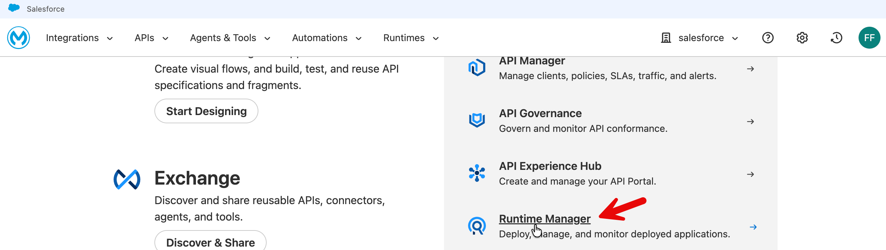
Click Deploy Application - select Sandbox.
Put in a descriptive name (e.g., mas-mcp-server) and choose file → upload file → select your downloaded file (stage2_customer_mcp-server-v1.jar)
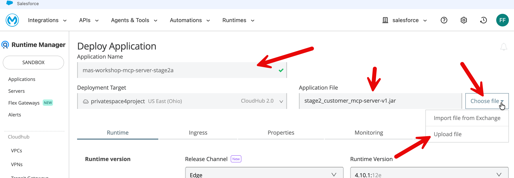
Press Deploy Application .
Click on Applications to go to the applications list and then click on your MCP server that you have just now deployed.
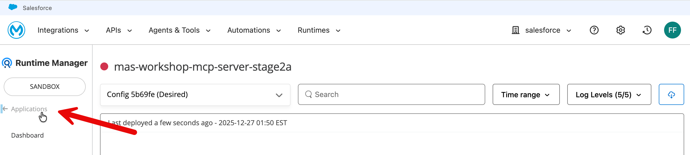
On the MCP server home page - when deployment completes it will show state as Running. Copy the Public Endpoint.
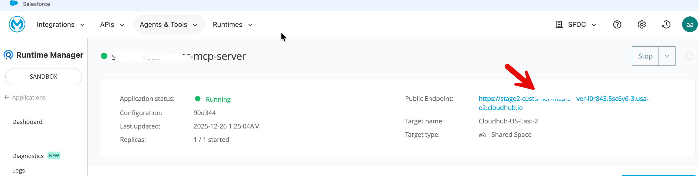
This public endpoint becomes the mcp.server.url in your A2A agent deployment property.
Test your deployed MCP server using the following tester: https://mcp-client-tester-fa6774d469ee.herokuapp.com/

Step 2: Deploy A2A agent
Download the packaged JAR file (use chrome browser): Download A2A Agent JAR
Typically it will download the file (stage3-a2a-v2.jar) in the following locations inside the VM: C:\Users\workshop\Downloads
Now click on Runtime Manager → Deploy Application to deploy your A2A agent.
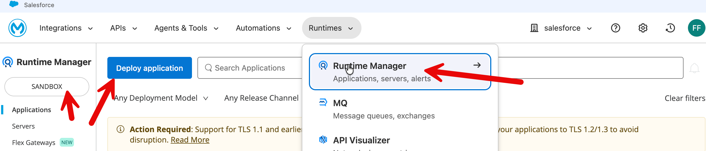
Put in an appropriately descriptive name (e.g., mas-workshop-a2a).
Choose File → Upload File - select the JAR file you had downloaded for this stage (stage3-a2a-v2.jar).
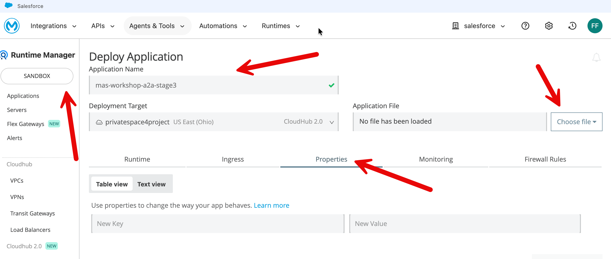
Click Properties tab and fill in the information as follows:
http.port=8081groq.api.key=fill in your own api keygroq.model=llama-3.3-70b-versatilegroq.timeout=1200000groq.max.tokens=2000mcp.server.url=replace this with your mcp server url (without forward slash at the end) mcp server url on cloudhub is without /sse at the end. e.g., correct url format:https://mcp-server-v1-xyz-4.usa-e2.cloudhub.iomcp.timeout=120000
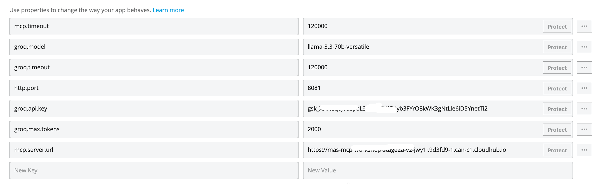
Press the Deploy Application button.
Now click on application in the left sidebar to go to the application list. Click on your newly deployed application to go to the application home page - and you will see the application state as Running (once deployment completes).
Copy the public endpoint of the application.
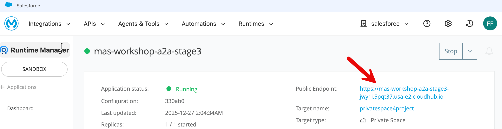
Step 3: Let’s interact with your A2A agent
Option 1: Interact with A2A Server on CloudHub with CURL
Replace the CloudHub url in the following curl with your own cloudhub url.
curl -X POST https://mas-workshop-a2a-stage3xyz7.usa-e2.cloudhub.io/ \
-H "Content-Type: application/json" \
-d '{
"jsonrpc": "2.0",
"method": "message/send",
"id": "test-local",
"params": {
"message": {
"kind": "message",
"messageId": "msg-001",
"contextId": "ctx-test",
"role": "user",
"parts": [
{
"kind": "text",
"text": "Hello, can you introduce yourself?"
}
]
}
}
}'Option 2: Interact with A2A Server on CloudHub with a thin client
We have created a ‘A2A Protocol Tester + Chat App’ for this workshop.
Open this link a chrome browser: https://unofficial-a2a-inspector-9ed43077bb5e.herokuapp.com/
Put in your A2A agent’s public endpoint in the ‘A2A Protocol Tester + Chat App.‘
Please note the URL format - do not put / at the end of the public endpoint.
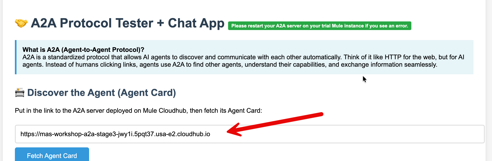
When you press Fetch Agent Card button, the protocol tester app calls your A2A agent and retrieves the Agent Card.
Agent Card is a lightweight JSON contract that communicates an agent’s capabilities, identity, compliance tags, and Trust Score.
In the rollout of the A2A multi-agent interoperability protocol, Salesforce contributed the concept of an Agent Card. The Google product team adopted the concept in its A2A specification, citing Agent Card as the keystone for capability discovery and version negotiation.
When you wire your A2A agent with other agents and MCP servers in an orchestration service (e.g., MuleSoft Agent Fabric Broker), the orchestrator discovers the capabilities of your agent via the Agent Card. It then knows, for example, which tasks to route to this agent.
The A2A Protocol Tester + Chat App is also designed to work as a thin Gen AI app.
Scroll down and ask our Gen AI agent a general question: e.g., "Tell me a joke.“
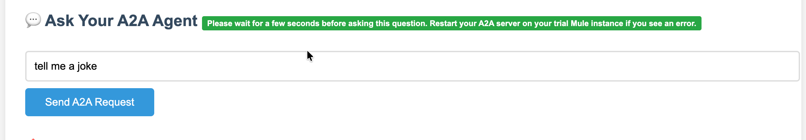
Scroll down to see the response.
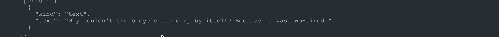
The A2A agent in the above case does not call the MCP server.
However when you ask an engineering parts related question, the A2A agent gets this information from your MCP server.
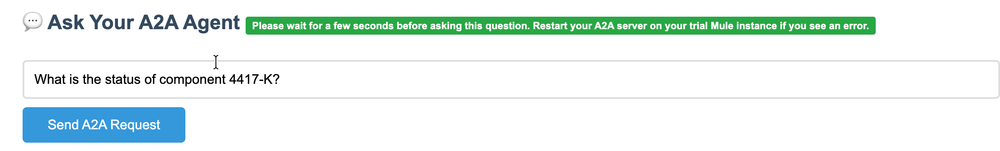
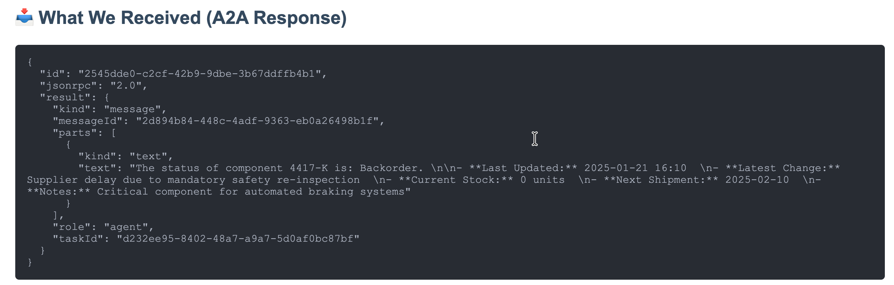
If you run into issues in testing - restart first your CloudHub deployed MCP server - wait for it to start. And then - restart your A2A server on CloudHub .
Test with CURL first to make sure its working and then test with the GUI tester.
Optional Challenge: How can your determine whether the response came from MCP server or directly from LLM general knowledge? What changes are needed in your application or callout so the response clearly indicates if the data in the MCP server was used by the LLM (e.g., the following screenshot)?
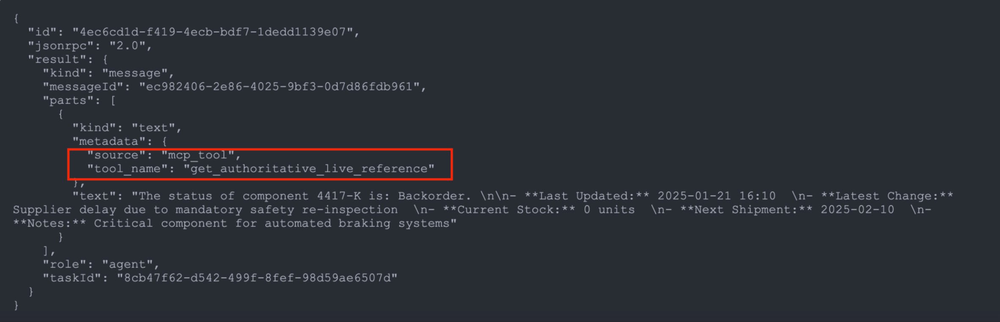
Tip for the challenge: We have included some options for you to consider - please see the section in the appendix below - “A2A Response: Where Did That Answer Come From?”. To see working version of the solution please download and import this JAR fille as a new project: Download Challenge Solution JAR This JAR file contains all the steps in this lab plus the changes that identify if MCP was used.
Summary
In the context of this workshop, A2A encapsulates your agent's complex internal machinery (the Groq reasoning "brain" and MCP database "hands") behind a uniform interface, allowing any client to invoke these powerful capabilities using a standard message without needing to understand or integrate with the underlying tools.
Before A2A, connecting AI agents in a multi-agent configuration required custom integration code for every unique pair, creating a chaotic web of dependencies. A2A solves this by introducing a standardized communication layer—much like HTTP did for the web—that allows agents to publish "Agent Cards" for instant discoverability and interoperability.
Appendix
How Can You Build This (A2A+MCP) Mule Flow Yourself?
At first glance this can seem overwhelmingly complex. How do you get started building this?
This is a completely normal reaction! When you see a finished flow with 15+ processors, it looks intimidating.
But the secret to building this—and any complex integration—is to build "Inside-Out." You don't start with the Listener; you start with the Logic.
Here is the 3-step recipe to demystify the build process:
The "Inside-Out" Build Strategy
Step 1: Build the "Brain" First (The Sub-Flow)
Ignore the A2A protocol for a moment. First, we just need a flow that takes a string (question) and returns a string (answer).
- Create a Sub-Flow: Drag a
Sub-Flowscope onto the canvas. Name itagent-brain-logic-flow. - Add the Intelligence: Drag the
[MCP] Toolingcomponent in.- Config: Point it to your Groq and MCP connections.
- Instruction: Tell it, "Use the tool for engineering questions and answer general questions by itself."
- Handle the Decision: Drag a
Choicerouter after the tooling component.- Path A (Tool Used): If the AI found data, it returns raw JSON. We don't want to send raw JSON to a human. So, add a
[Chat] Completionsprocessor here to "Summarize this data into a nice sentence." - Path B (Default): If the AI just chatted (no tool), simply pass that text through.
- Path A (Tool Used): If the AI found data, it returns raw JSON. We don't want to send raw JSON to a human. So, add a
At this point, you have a working logic engine. You give it "Part 4417", and it gives you "The part is available."
Step 2: Build the "Face" (The Main Flow)
Now that the brain works, we need to give it a public address so other agents can find it.
- Create a Flow: Drag a standard
Flowonto the canvas. - Add the Trigger: Drag the
A2A Server - Task Listenerto the source.- Config: Bind it to the
answer_questionskill defined in your Agent Card.
- Config: Bind it to the
- Extract the Prompt: The listener gives you a huge JSON envelope. Use a
Set Variableto pluck out just the user's text (payload.message.parts[0].text). - Connect to the Brain: Drag a
Flow Referenceand point it to the sub-flow you built in Step 1. How to “point it” to the sub-flow: Unlike other tools that use drag-and-drop arrows to connect logic, Anypoint Studio uses configuration settings to link flows. To connect your 'Face' (Main Flow) to your 'Brain' (Sub-Flow), click the Flow Reference component you just placed. In the Properties window at the bottom of your screen, locate the Flow Name field and use the dropdown menu to selectagent-brain-logic-flow. This creates the internal link that passes the user's prompt to your logic engine and waits for the answer. - Wrap the Response: The Brain returns plain text, but A2A demands a strict JSON format. Add a
Transform Messageat the end to package the answer into the official A2A JSON-RPC structure.
Step 3: Define the Identity (Global Config)
Finally, you give your agent a name.
- Global Elements: Open the A2A Config.
- Agent Card: Paste the JSON that defines who you are: "I am the Stage3Agent, and I have a skill called
answer_question."
Summary: You don't build this left-to-right. You build the Logic (Sub-flow) to make it smart, then you build the Listener (Main flow) to make it accessible. The connectors do all the heavy lifting; you're just wiring the 'Brain' to the 'Mouth'.
How Stage 3 ties in with Stage 2: In Stage 2, you successfully built the 'Brain' of your agent—an orchestration engine that uses an LLM for reasoning and MCP to fetch real-time data. In this stage, we are simply wrapping that existing logic inside the A2A (Agent-to-Agent) Protocol. We are not rewriting your core intelligence; instead, we are attaching an A2A Task Listener to the front (to receive tasks) and a Transform Message component (a A2A protocol wrapper using a simple DataWeave script) to the back (to format the protocol response), instantly transforming your private, standalone tool into a discoverable, network-ready service that other agents can find and trust. The A2A Task Listener element is the key part of the Mule A2A connector in this application.
Before actually building out the flows in Mule you could also consider a quick sketch to plan the flow. We have included an example below.
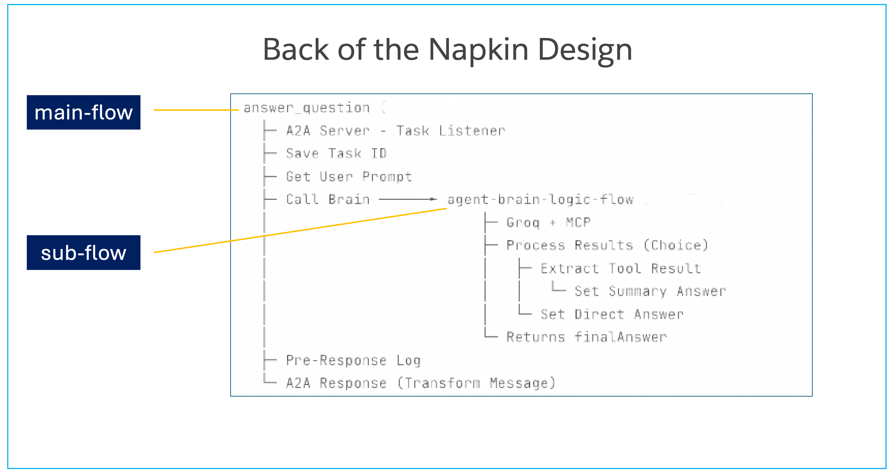
We hope this demystifies the steps in the design process.
From API-Led Connectivity to Agent-Led Integration
In traditional integration, the design process begins with a rigid RAML or OpenAPI specification that strictly defines resources, data types, and endpoints (e.g., GET /inventory).
In this Agent architecture, that technical contract is replaced by an Agent Card. Instead of documenting static inputs and outputs, the Agent Card declares semantic Skills (such as answer_question) and Intents.
This shifts the interface definition from describing how to connect (syntax) to describing what the service is capable of doing (capability), allowing other agents in the network to discover and invoke the service without requiring a pre-generated client SDK.
However, the traditional API specifications do not disappear; they simply move deeper into the stack.
- The Agent you are building acts as a dynamic consumer of your existing enterprise APIs.
- Through the MCP (Model Context Protocol) integration, your agent connects to established System and Process APIs—which are still governed by their own rigorous RAML/OAS specs—to fetch authoritative data.
- The agent sits on top of your existing application network, orchestrating calls to these underlying services based on real-time reasoning rather than hard-coded orchestration flows.
This architecture changes the routing mechanism from static to dynamic. In a standard Mule application, you use APIkit to deterministically route URL paths to specific flows based on the spec. In this A2A architecture, the A2A Task Listener replaces the APIkit router. It receives standardized task objects and routes them based on the requested Skill ID.
This moves the integration logic from "Design-Time" (where developers manually map field A to field B) to "Run-Time" (where the A2A protocol handles the handshake and the AI model dynamically interprets the data structure), reducing the need for constant contract versioning when underlying data shapes evolve, as the AI model can dynamically interpret variations in structure rather than requiring strict field-level mapping for every change.
In practical terms, this does not eliminate full-cycle API development—it repositions it. The foundational disciplines of API-led connectivity remain intact: RAML and OpenAPI specifications still govern System and Process APIs, API gateways still enforce security, schema validation, and SLAs, and Mule runtimes still provide deployment, observability, and operational control. What changes is the entry point into the integration network. Instead of a UI or Experience API deterministically invoking a predefined endpoint via APIkit routing, an agent becomes the primary consumer, dynamically selecting which underlying APIs to call at runtime based on intent, context, and reasoning.
Mule shifts from being purely a design-time orchestration engine to a governed execution fabric, where traditional APIs continue to provide stable, contract-driven access to enterprise systems, while agent-level constructs (Agent Cards, Skills, MCP tools, and A2A task routing) sit above them, enabling adaptive orchestration without breaking the underlying API contracts. This preserves the safety, governance, and resilience of full-cycle API development while allowing integration logic to move from static, version-bound flows to dynamic, agent-driven decisioning.
Note: We have discussed this topic extensively in the Appendix in our Stage 1 lab (Stage 1: Enterprise-Grade LLM Activation with Mule Inference Connector) if you are interested in the specifics of mapping full-cycle API development concepts to our lab modules.
Optional Challenges/Exercises
Optional Exercise: Test A2A Server on CloudHub with Postman
Steps in Postman:
- Create new request
- Change method to
POST - Paste URL
- Go to "Headers" tab → Add
Content-Type: application/json - Go to "Body" tab → Select "raw" → Select "JSON" from dropdown
- Paste the JSON above
- Click "Send"
Following is an example for using Postman.
Method: POST
URL: https://stage3-a2a-l0r843.5sc6y6-3.usa-e2.cloudhub.io/
Headers: Content-Type: application/json
Body: (Select "raw" and "JSON")
{
"jsonrpc": "2.0",
"method": "message/send",
"id": "test-cloudhub",
"params": {
"message": {
"kind": "message",
"messageId": "msg-123",
"contextId": "ctx-test",
"role": "user",
"parts": [
{
"kind": "text",
"text": "What is the status of component 4417-K?"
}
]
}
}
}Expected Response: JSON with component 4417-K status.
A2A Response: Where Did That Answer Come From?
How can we determine whether response is coming from MCP server or general LLM knowledge.
Option 1: Client side instrumentation
In your client program (e.g., CURL) check the response and if there are parts related information, classify it as MCP response in your output.
However this (pattern matching on keywords) would be primarily visual formatting. It won’t be reliable.
Option 2: Server side instrumentation
A deterministic way to confirm whether the response included data sent back from MCP server would require either changing the LLM instructions or A2A server response metadata.
Option 2A: LLM prompt engineering
Add in the following system prompt to LLM instructions.
System_prompt = """
You are an engineering assistant with access to real-time data.
IMPORTANT: When responding:
Clearly distinguish between your general knowledge and MCP tool results
Use this format:
For MCP data: Start with "[MCP SOURCE]"
For general knowledge: Start with "[GENERAL]"
Always cite when information comes from the MCP tool call.
"""The above instructions can be added to the LLM as in the following screenshot in Mule flow .
Note you would may need to format the instructions appropriately.
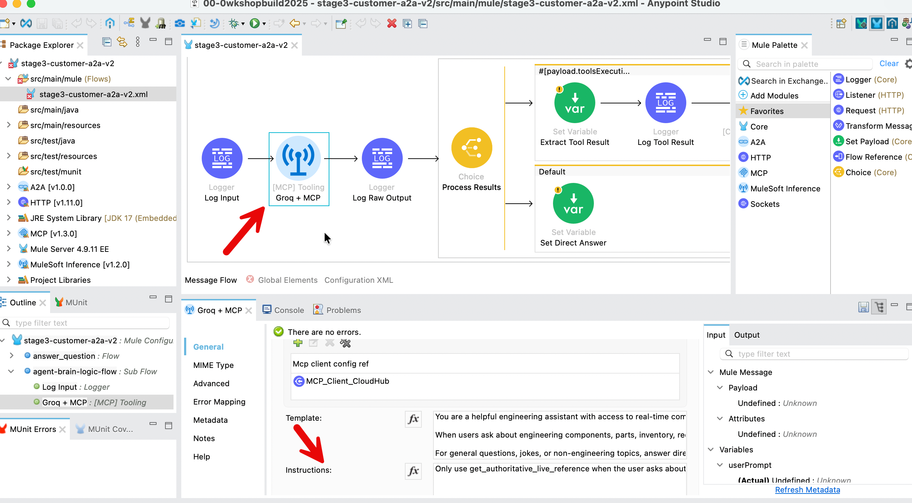
Option 2B: Add metadata to response parts
Modify your agent to include metadata in each response part. You need to modify the Mule (DataWeave) script in your A2A response element in your field.
Modify the A2A Response (Transform Message) element in the top flow.
Current response
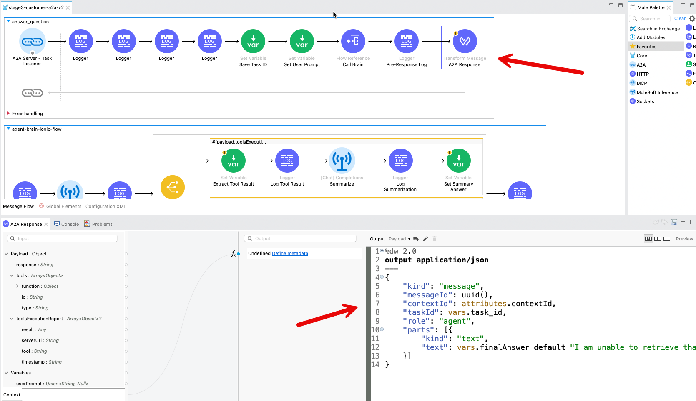
Modify the above script to include metadata fields.
"parts": [{
"kind": "text",
"text": vars.finalAnswer default "I am unable to retrieve that information",
"metadata": {
"source": if (vars.toolResult != null) "mcp_tool" else "llm_general",
"tool_name": if (vars.toolResult != null) "get_authoritative_live_reference" else null
}
}]You can also change the response text so it has clearly labeled sections.
"parts": [{
"kind": "text",
"text": if (vars.toolResult != null)
"**MCP Data Source (Authoritative):**\n" ++ (vars.finalAnswer default "I am unable to retrieve that information")
else
"**General Information:**\n" ++ (vars.finalAnswer default "I am unable to retrieve that information")
}]Option 2B is a more authoritative approach because it reads directly from the MuleSoft flow's execution state (vars.toolResult) rather than relying on LLM behavior or text pattern matching. When the MCP client successfully calls the MCP server, MuleSoft stores the result in vars.toolResult, and the Transform Message component checks this variable to deterministically set the metadata - meaning the source attribution reflects what actually happened in the infrastructure, not what the LLM claims or what patterns appear in the text. This provides programmatically-verifiable proof of whether MCP data was used.